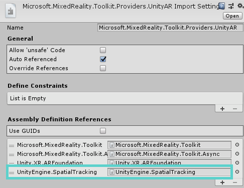
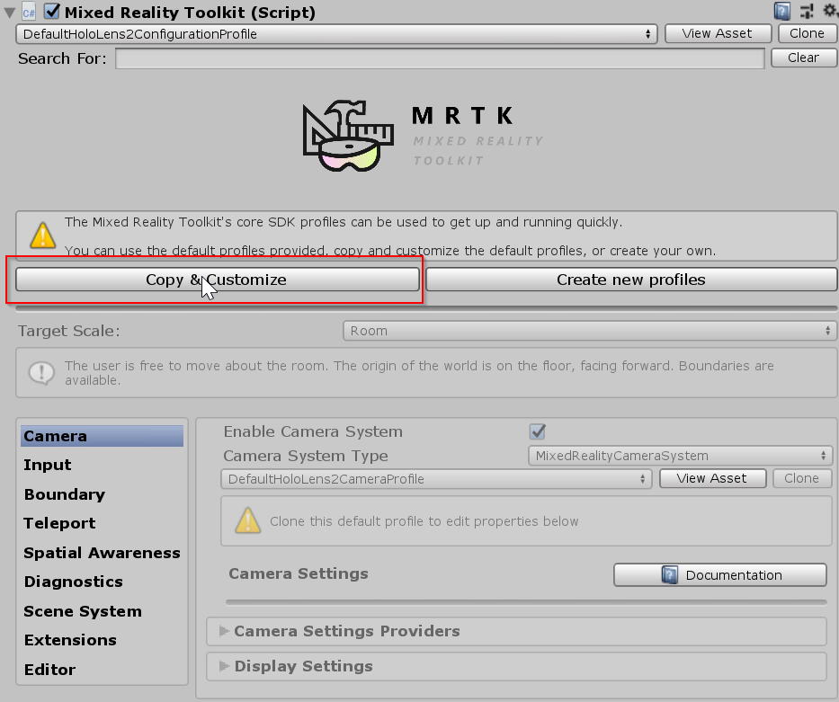
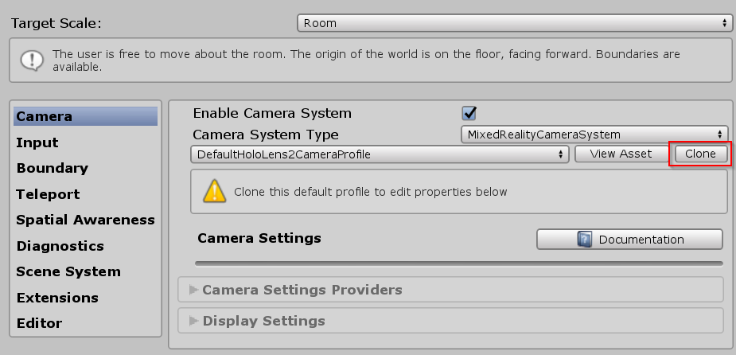
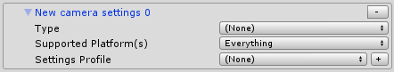
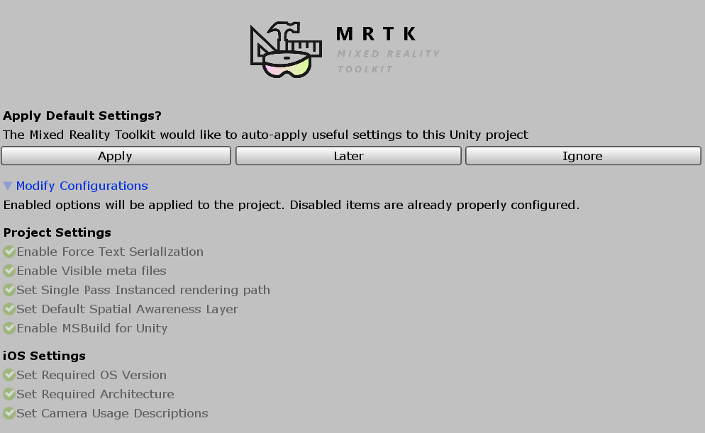
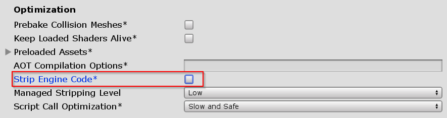

如何为iOS和Android配置MRTK [实验性]
安装必需的软件包
[!注意] 导入UnityAR程序包后，您将看到以下错误: Assembly has reference to non-existent assembly 'Unity.XR.ARFoundation' (Assets/MixedRealityToolkit.Staging/UnityAR/Microsoft.MixedReality.Toolkit.Providers.UnityAR.asmdef) . 要解决，请安装下面列出的正确版本的ARFoundation。
在Unity软件包管理器（UPM）中，安装以下软件包:
Unity 2018.4.x
Android iOS 评论 AR Foundation
版本: 1.5.0 - preview 6AR Foundation
版本: 1.5.0 - preview 6对于Unity 2018.4，此软件包包含在预览中。要查看软件包：Window > Package Manager > Advanced > Show Preview Packages ARCore XR Plugin
版本: 2.1.2ARKit XR Plugin
版本: 2.1.2Unity 2019.x
Android iOS AR Foundation
版本: 2.1.4AR Foundation
版本: 2.1.4ARCore XR Plugin
版本: 2.1.2ARKit XR Plugin
版本: 2.1.2如果使用Unity 2019.x，则需要修改Unity AR提供者的程序集定义文件以添加UnityEngine.SpatialTracking引用。
[!注意] MRTK将根据项目加载的Unity版本自动更新程序集定义。此处提供此信息以供参考。

启用Unity AR相机设置提供者
以下步骤假定使用MixedRealityToolkit对象。其他服务注册者所需的步骤可能有所不同。
Select the MixedRealityToolkit object in the scene hierarchy.

Select Copy and Customize to Clone the MRTK Profile to enable custom configuration.

Select Clone next to the Camera Profile.

Navigate the Inspector panel to the camera system section and expand the Camera Settings Providers section.

Click Add Camera Settings Provider and expand the newly added New camera settings entry.

Select the Unity AR Camera Settings provider

For more information about configuring the Unity AR camera settings provider: Unity AR camera settings provider.
Building a Scene for Android and iOS devices
Make sure you have added the UnityAR Camera Settings Provider to your scene.
Switch platform to either Android or iOS in the Unity Build Settings
When you switch the platform you should see the MRTK Project Configurator Window with settings for your chosen platform. Click Apply to enable platform specific settings.
iOS Project Configurator Settings

There are no additional steps after switching the platform for Android.
If the platform is iOS, Edit > Project Settings > Player > Other Settings, under the Optimization header, uncheck Strip Engine Code

Note
Unchecking Strip Engine Code is the short term solution to an error in Xcode #6646. We are working on a long term solution for MRTK 2.3.0.
- Build and run the scene